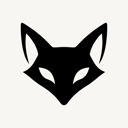

选中文字，双击 ⌥
带进来就译好；代码、路径原样保留。

Kami带进来就译好；代码、路径原样保留。
改通顺，顺带整理成标题、列表和表格。
问一句，先给结论；不满意就接着追问。
Raycast Notes 的平替：不接模型，停下就自动保存成 Markdown。
按 ⌥S 框选任意一块，在本机识别后直接翻译。
输入 /operator，说一句话，配置就改好了。
基于任意一套内置主题，只改想改的颜色；⌘Z 随时撤销。
18 套配色，/theme 边选边预览。
第一次打开，把面板里的提示词交给 Claude Code 或 Codex，它帮你接好模型。
有更新时打开面板就能看到更新内容，确认一次即可安装。
brew install --cask umupa/kami/kami